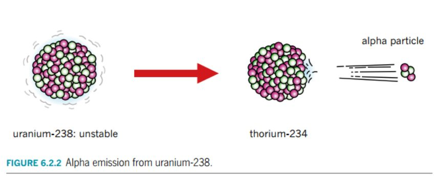
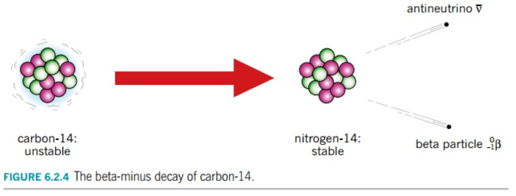
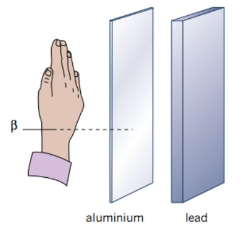
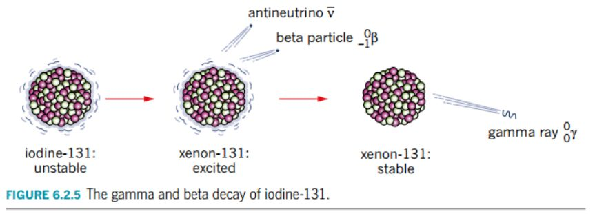
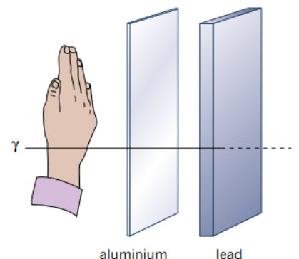
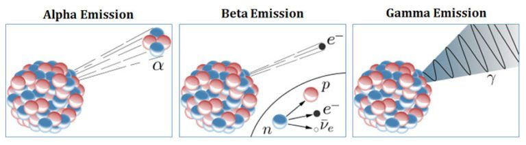
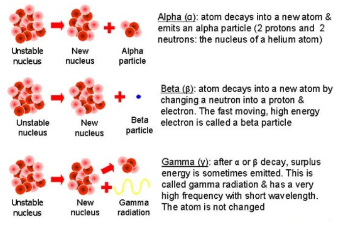

There are three main types of radiation: alpha, beta and gamma, named after the first three letters of the Greek alphabet.
Alpha decay
An alpha particle is a helium nucleus, containing two protons and two neutrons. It is written as α or 42He.
For example, uranium-238 can emit an alpha particle. This is called alpha decay. It happens because the uranium nucleus is very large, which makes it unstable.

Notice that after alpha decay, the products are different elements. This is because the number of protons always determines which element it is. This is called nuclear transmutation.
Alpha particles are relatively heavy and slow-moving. They travel at around 5–7% of the speed of light. They do not penetrate well and can be stopped by 3–4 cm of air or a sheet of paper. But if you ingest them, by eating or breathing in dust, they can cause a lot of damage to the body.
Beta minus decay
There are other kinds of unstable nuclei. Consider carbon-14. Carbon-12 and carbon-13 are both stable, but carbon-14 has too many neutrons to be stable, so it decays.
When this happens, one neutron (neutral) changes into a proton (+1) and an electron (−1). An antineutrino is also formed, which is a particle with no charge and negligible mass.
The electron produced is called a beta minus particle (β−). It was named "beta minus" before scientists realised that it was the same thing as an electron. It is written as β or 0−1e.

The name of the element changes, because one of carbon's neutrons was converted into a proton. Once the number of protons changes, the element changes. The β has a charge of −1, which balances the extra proton formed when carbon transmuted into nitrogen.
Beta minus particles are fast-moving, around 90% of the speed of light, because they are much smaller than alpha particles. They penetrate quite well: they will travel through a human hand, but can be stopped by a 1 mm sheet of aluminium.

Gamma decay
Gamma radiation often accompanies alpha and beta minus decay. It happens because the protons and neutrons in the new (daughter) nucleus are excited (in a high-energy state) and need to rearrange slightly. This releases energy as a gamma ray (γ). Gamma rays are not particles but high-energy electromagnetic radiation.
The asterisk (*) means the nucleus is excited.

Gamma rays have very high penetrating ability. A metre of concrete will not stop them, but a few centimetres of lead will.

Summary of alpha, beta and gamma


| Alpha (α) | Beta minus (β−) | Gamma (γ) | |
|---|---|---|---|
| What it is | Helium nucleus (2 protons, 2 neutrons) | Electron (from a neutron turning into a proton) | High-energy electromagnetic radiation |
| Charge | +2 | −1 | 0 |
| Speed | 5–7% of the speed of light | ≈ 90% of the speed of light | Speed of light |
| Stopped by | Paper or 3–4 cm of air | 1 mm of aluminium | A few cm of lead (not stopped by 1 m of concrete) |
| Change to the nucleus | Mass number −4, atomic number −2 | Mass number unchanged, atomic number +1 | No change (the nucleus just loses energy) |
Match each description with the type of radiation.
Examples of radioactive decay
Complete each decay equation by giving the product nucleus. Use the periodic table to name the new elements.
| Decay | Product mass number | Product atomic number | Product symbol | Particle emitted |
|---|---|---|---|---|
| Alpha decay of uranium-238 (23892U) | ||||
| Alpha decay of bismuth-214 (21483Bi) | ||||
| Alpha decay of radon-218 (21886Rn) | ||||
| Alpha decay of radium-226 (22688Ra) | ||||
| Beta decay of tellurium-131 (13152Te) | ||||
| Beta decay of bismuth-214 (21483Bi) | ||||
| Beta decay of protactinium-234 (23491Pa) | ||||
| Gamma decay of cobalt-60* (6027Co*) |
Alpha decay: mass number goes down by 4 and atomic number goes down by 2, e.g. 23892U → 23490Th + 42He.
Beta decay: mass number stays the same and atomic number goes up by 1, e.g. 13152Te → 13153I + 0−1β.
Gamma decay: the nucleus stays the same element; it just releases energy, 6027Co* → 6027Co + γ.